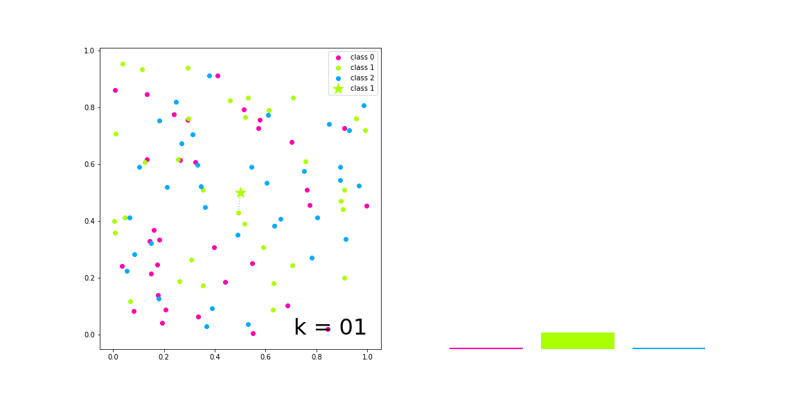
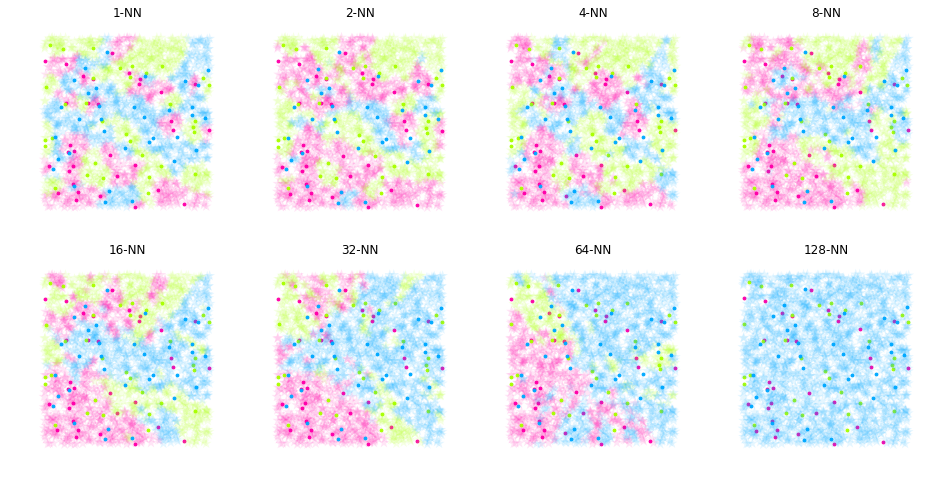

Overview and implementation of k-Nearest Neighbor Classification.
%matplotlib inline
import matplotlib
import matplotlib.pyplot as plt
import numpy as np
from kNN__utils import *
class kNNClass(Distance):
def __init__(self, k=1):
super(kNNClass, self).__init__()
self._k = k
self._q = None
self._class = None
def fit(self, X, y):
self._q = X
self._class = y
def pred(self, P):
y, NNs = [], []
for i, p in enumerate(P):
dist = self.distance(p, self._q)
odist = np.argsort(dist)[:self._k]
fdist = np.ravel(self._class[odist])
hist = np.bincount(fdist)
index = np.argmax(hist)
y += [index]
NNs += [odist]
return np.array(y), np.array(NNs)
# Synthetic data 1
Q1, Q2, CL = synthData1()
Q = np.array([Q1, Q2]).T
p = [[0.5, 0.5]]
colors = ['#FF00AA', '#AAFF00', '#00AAFF']
k = 20
knnc = kNNClass(k)
knnc.fit(Q, y=CL)
y_, NNs = knnc.pred(p)

%%time
# Synthetic data 2
P1, P2 = synthData2()
P = np.array([P1, P2]).T
k = 128
knnc = kNNClass(k)
knnc.fit(Q, y=CL)
y_, NNs = knnc.pred(P)
Wall time: 75.9 ms
